Randomised Block Design
The idea behind Randomized Block Design (RBD) dates back to the early 1900s, when agricultural experimentation was at its height under the direction of English statistician Sir Ronald A. Fisher at the Rothamsted Experimental Station in the 1920s. The statistical cornerstone of contemporary experimental design was established by Fisher’s introduction of the fundamental concepts of randomization, replication, and blocking(local control), which fundamentally changed the way scientists carried out experiments. Figure 1 shows the Fisher’s diagram summarizing the roles of three basic principles of experimental designs.
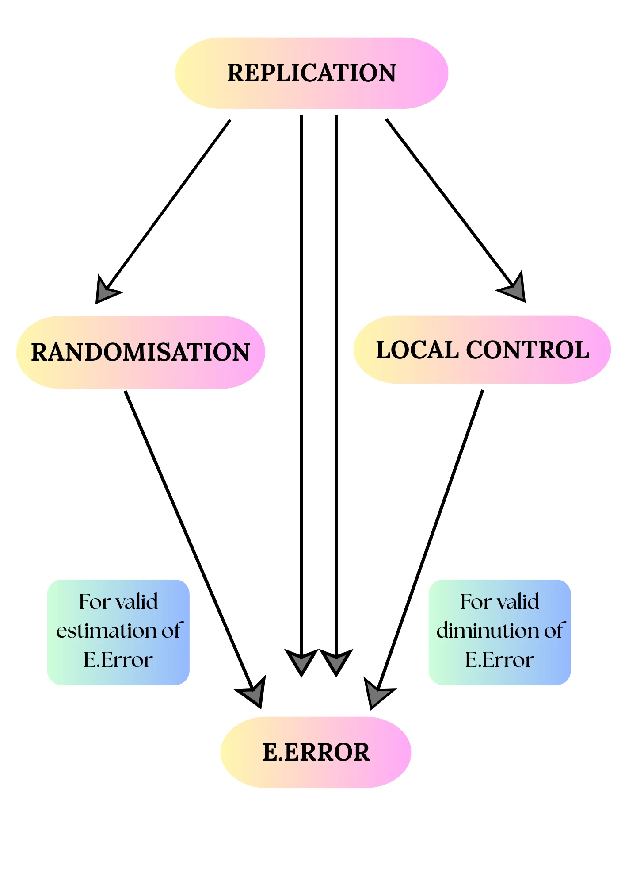
Researchers quickly discovered that different experimental units, such as laboratory samples, plant species, or land plots, are not all the same. Slope, precipitation, soil fertility, and microclimate are some of the natural causes of these units’ differences. The actual effects of the treatments under examination may be obscured or distorted by such inherent variability. To address the problem of natural variability among experimental units, the statistician Sir Ronald A. Fisher introduced the concept of the Randomized Block Design (RBD).
His method was elegant yet powerful “Control what you know, and randomize what you don’t”
Click on the > arrow icon next to each step to expand and explore examples, purposes, and key ideas
Group experimental units that share similar characteristics into blocks.
💡 Example:
In an agricultural experiment, plots with similar soil fertility or moisture levels can be grouped within the same block.
Once blocks are formed, randomly assign treatments within each block.
🎲 Purpose:
This ensures every treatment is tested under comparable conditions, helping to reduce bias and increase accuracy.
By grouping similar experimental units, RBD controls known variability (like slope, rainfall, or fertility).
🎯 Result:
Researchers can focus on true treatment effects, rather than background noise.
💡 Insight: Blocking doesn’t remove variability-it organizes it. This organization is what makes your treatment comparisons fair, precise, and statistically sound.
Originally, the Randomized Block Design (RBD) was developed for agricultural field trials, where researchers needed to compare treatments (like fertilizers) under varying soil and environmental conditions.
But its usefulness doesn’t stop there and RBD has become a powerful tool across many disciplines !
Hover or click each point to see more information
- 🌾 Agriculture
- 💊 Clinical Trials
- 🏭 Industrial Quality Control
- ⚙️ Engineering Optimization
Example
Let’s explore some practical situations in agricultural research where the Randomised Block Design, is applied.
Study Context
- Ten mango cultivars, each representing a different treatment, are being evaluated by a horticultural scientist. Alphonso, Kesar, Dasheri, Himsagar, Chausa, Badami, Safeda, Bombay, Langra, and Totapuri are among the kinds that are included. The experiment is laid out in three blocks to account for variability among experimental units, such as differences in soil fertility or microclimatic conditions. Each block contains all ten varieties, and the assignment of treatments within each block is randomized. Each response variable (yield, Obs1, Obs2, FW) can be analyzed using a Randomized Block Design (RBD) to determine whether the mango varieties differ significantly while controlling for block effects.Example1
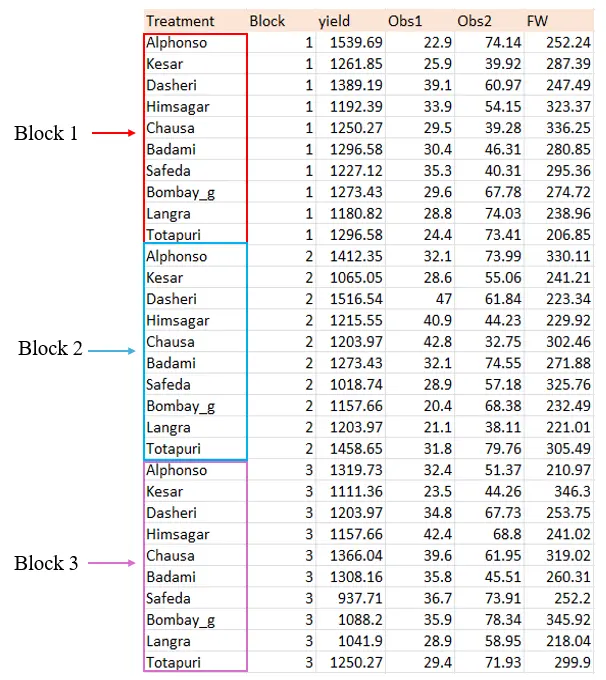
- A field experiment was conducted to evaluate the impact of four chemical treatments (C1, C2, C3, and C4) on a plant species using a Randomized Block Design (RBD). The field was divided into four blocks to account for possible variation in environmental conditions such as soil fertility and moisture. Each block received all four treatments, randomly assigned within the block, resulting in a total of 16 observations per time point. Data were recorded on Day 1, Day 3, Day 6, Day 7, and Day 15 to study the temporal response of the plants to the treatments. The final column of the dataset contains proportion data, which can be subjected to an Arcsine transformation before analysis. The RBD framework allows the chemist to determine whether the four chemical treatments differ significantly while controlling for block-to-block variability.Example2
- This study uses a Randomised Block Design to compare water quality among five river stations (treatments). Water quality parameters (transparency, depth, water temperature, pH, dissolved oxygen, nitrate, phosphate, etc.) were measured at each station. Measurements were repeated across five sampling occasions (blocks) to control temporal variability (for example five weekly visits). Within each sampling occasion (block), all five stations were sampled - the order of sampling or the sub-sampling positions may be considered randomized within the block. Thus the design has 5 treatments (stations) and 5 blocks (sampling occasions), giving one observation per treatment × block cell (25 observations per parameter). This layout lets us remove between-occasion variability (block effect) and test whether station differences (treatment effect) are statistically significant.Example3
Theory
You can either read through the theory of the Randomised Block Design, or, if you’re a non-statistician interested only in the practical aspects, you may skip ahead to Section 4, where we have explained the design with a practical example.The theory section outlines the key steps involved in performing the Randomised Block Design.Understanding these concepts will help you carry out the analysis with clarity and confidence.
Assumptions
The following assumptions ensure the validity and precision of results in an RBD experiment:
🧩 Homogeneity within Blocks - Experimental units within each block are homogeneous, meaning the units within a block are more similar to each other than to those in other blocks.
🔄 No Treatment × Block Interaction - There is no interaction between treatments and blocks - implying that the treatment effects are consistent across all blocks.
🎲 Randomization within Blocks - Treatments are randomly assigned within each block to ensure unbiased estimates of treatment effects.
📈 Normality and Equal Variance - The variability within each block (experimental error) is assumed to follow a normal distribution with constant variance.
🧱 Blocks as a Source of Controlled Variation - The blocks account for a known source of variability, thereby reducing unexplained variance and improving the precision of treatment effect tests.
✅ By satisfying these assumptions, the RBD design effectively separate block effects from random error-enhancing the reliability of treatment comparisons.
Click on the ➤ arrow icon below to explore the Key Features of Randomised Block Design
Key Features of Randomised Block Design
Experimental units are grouped into homogeneous sub-groups called blocks, which represent sources of variation that can be controlled separately from the treatment effect.
Within each block, treatments are randomly assigned to experimental units, restricting randomization to within blocks.
RBD controls variability by removing block-to-block variation from experimental error, leading to more precise estimates of treatment effects.
It combines the principles of randomization, replication, and local control, making conclusions more reliable.
Flexible design allowing any number of treatments and replications.
The blocking factor is a nuisance variable that is not the main focus but is accounted for to reduce confounding variability.
Commonly used when experimental material or conditions are not homogeneous, allowing better comparison across treatments within similar conditions.
Hypotheses
There are two primary hypotheses tested in RBD:
- Null hypothesis (H₀): All treatment means are equal. \[ H_0: \tau_1 = \tau_2 = \tau_3 = \cdots = \tau_t = 0 \]
- Alternative Hypothesis (H₁): At least one treatment mean differs.
- Null Hypothesis (H₀): All block effects are equal. \[ H_0: \beta_1 = \beta_2 = \cdots = \beta_r = 0 \]
- Alternative hypothesis (H₁): At least one block differs.
Click on the ➤ arrow icon below to explore the Steps in Randomised Block Design
Steps in Randomised Block Design
Step one: Arrange Data in a Two-Way Table
Step two: Compute the Marginal Totals and Grand Total
Step three: Calculate Correction Factor (CF)
Step four: Compute the Sum of Squares
Step five: Compute Mean Squares
Step six: Compute F-Statistics
Step seven: Decision and Interpretation
The Test Statistic
The test statistic for Randomized Block Design (RBD) is calculated using a two-way ANOVA F-statistic that tests the equality of treatment means while accounting for block effects.
\[ F = \frac{MST}{MSE} = \frac{\frac{SST}{k-1}}{\frac{SSE}{n - b - k + 1}} \]
Where:
- \(MST\): Mean Square for Treatments
- \(MSE\): Mean Square Error
- \(SST\): Sum of Squares for Treatments
- \(SSE\): Sum of Squares for Error (Residual)
- \(n\) is the total number of observations
- \(k\) is the number of treatments
- \(b\) is the number of blocks
\[ F_{\text{Block}} = \frac{MSB}{MSE} = \frac{\frac{SSB}{b-1}}{\frac{SSE}{n - b - k + 1}} \]
Where:
- \(MSB\): Mean Square for Blocks
- \(MSE\): Mean Square Error
- \(SSB\): Sum of Squares for Blocks
- \(SSE\): Sum of Squares for Error (Residual)
- \(n\) is the total number of observations
- \(k\) is the number of treatments
- \(b\) is the number of blocks
Correction for Ties
In RBD (Randomized Block Design), the correction for ties or missing values typically involves adjusting the ANOVA F-statistic to account for unequal sample sizes or violations of assumptions. This adjustment is often based on Aitken’s or other corrected mean square approaches which enables the test to remain robust even if the strict assumptions of RBD are slightly violated.
If the assumptions of ANOVA are slightly violated, or if there are unequal sample sizes (missing values) in the dataset, the F-statistic can be adjusted using Aitken’s adjustment or a corrected mean square approach:
\[ F_{adjusted} = \frac{\text{Corrected Mean Square for Treatments}}{\text{Corrected Mean Square Error}} \] This ensures that the test remains valid under minor violations of assumptions.
Interpreting the Results
In a Randomized Block Design (RBD),the Analysis of variance (ANOVA) is used to determine whether there are significant changes between treatment means, but with an emphasis on blocking. Based on its specific numerator degrees of freedom (number of treatments minus one) and denominator degrees of freedom (residual/error, which accounts for variance after both treatment and block effects are removed), the F test statistic for treatments is computed and compared to a critical value.The null hypothesis that all treatment means are equal is rejected if the computed F value for treatments is greater than the critical value, suggesting that at least one treatment differs significantly. An F test for blocks is also included in the ANOVA table to ascertain whether blocking was successful in reducing nuisance variance. Post-hoc multiple comparison tests, like Tukey’s HSD or Fisher’s LSD, are used to determine whether specific pairs of treatments are substantially different after accounting for block effects in the analysis, as ANOVA in RBD, like in CRD, does not define which treatments vary.
What is a post-hoc test?
A post hoc test is a statistical procedure performed after an initial analysis, such as ANOVA, shows a statistically significant result. Its purpose is to determine exactly which groups differ from each other when you have three or more groups. In other words, after finding an overall difference among group means, post hoc tests help identify where those specific differences lie.
Post-hoc test
In the case of a Randomized Block Design (RBD), a post-hoc test is used after finding a significant treatment effect in your overall RBD analysis, typically via ANOVA. The purpose of the post-hoc test remains the same as in other designs-it helps you determine which specific treatment groups differ from each other. A significant outcome from an RBD and the primary statistical test (such a two-way ANOVA) shows that at least one treatment effect varies between blocks. Like a standard ANOVA, this result does not specify which particular treatments vary; rather, it merely indicates that differences exist. After that, all pairs of treatment means within the blocked structure are compared using post-hoc tests (such LSD, Tukey’s or DMRT) to help identify which treatments differ from one another.
When the Randomized Block Design (RBD) is significant, the following post hoc tests are commonly used to help identify which treatments differ from one another:
Tukey’s Test
When an ANOVA indicates that there are significant differences between treatment means, a post hoc analysis called Tukey’s Honest Significant Difference (HSD) test is employed in a Randomized Block Design (RBD).RBD accounts for variability from non-treatment factors by grouping experimental units into blocks.Tukey’s HSD accounts for block effects and preserves the familywise error rate while enabling all pairwise comparisons among treatment means once an ANOVA demonstrates a significant treatment effect.The procedure uses the mean square error from the ANOVA and a critical value from the Studentized Range distribution to calculate the minimum significant difference, ensuring only truly distinct treatment pairs are flagged as significantly different. This method increases the reliability and power of treatment comparisons in blocked experiments, making it especially valuable in agricultural and biological studies where environmental or site-specific variation is present.
LSD (Least Significant Difference) Test
In the context of a Randomized Block Design (RBD), the Least Significant Difference (LSD) test is a parametric mean comparison method that is conducted following the confirmation of treatment differences by a significant ANOVA result. By determining the smallest difference necessary for statistical significance between pairs of means, using the pooled error variance from ANOVA, LSD is intended to determine which particular treatment means differ from one another.Blocks are used in RBD to help limit field heterogeneity, which increases experiment precision and strengthens the pooled error term for LSD computation. However, because doing numerous LSD comparisons raises the chance of Type I error, particularly as the number of treatments increases, practitioners are advised to utilize the LSD test sparingly-only for preplanned or nearby mean comparisons.When comparisons are meaningful and not made arbitrarily after data inspection, the test performs well. Based on the parametric assumptions of normality and equal variances, LSD in RBD is a robust yet flexible method for identifying differences between treatment means. It also takes use of the accuracy gain provided by blocking.
Which post-hoc test to use?
In a Randomized Block Design (RBD), a post-hoc test is applied after finding a significant treatment effect in the overall analysis, typically via ANOVA. The purpose of the post-hoc test is to identify which specific treatment groups differ from each other, since a significant result from the overall ANOVA only indicates that at least one treatment effect varies between blocks but does not specify where those differences occur. After establishing statistical significance for treatment effects in the RBD, post-hoc procedures such as LSD, Tukey’s, or DMRT are used to compare all pairs of treatment means within the blocked structure. These pairwise comparisons help pinpoint which treatments differ specifically, enabling targeted interpretation and decision-making in the context of the blocking that controlled for known sources of variation.This approach ensures that the results account for block effects and maintains the rigor of identifying meaningful treatment differences while controlling for experiment-wise error rates, providing a robust analysis framework for blocked experimental designs.
p Adjustment Method
In statistical hypothesis testing, p-values indicate the probability of observing results at least as extreme as those observed, assuming the null hypothesis is true. When multiple tests are conducted, the risk of false positives (Type I errors) increases. P-value adjustment methods address this issue by controlling the overall error rate, ensuring reliable inference in multiple testing scenarios.
Different p-adjustment methods are listed below, if you are interested you can click on them to read more:
- Bonferroni
- Holm
- Hommel
- Benjamini-Hochberg Procedure (BH)
- Benjamini-Yekutieli Procedure (BY)
- False Discovery Rate (q-value) Approach
Which p-adjustment method to use?
In agricultural research, it is a common practice to use no p-value adjustment (“none”) for multiple comparisons after tests like the Kruskal-Wallis. This is because agricultural experiments often involve smaller numbers of treatments and replications, where strict adjustments may be overly conservative and reduce the ability to detect meaningful differences. Researchers prefer to interpret results with caution rather than risk missing important findings due to overly strict error control. Nonetheless, the choice should always consider the study design, number of comparisons, and the consequences of Type I versus Type II errors in the specific context. However, When you have a large number of groups and sizable sample sizes, like in social science research, controlling the false discovery rate (FDR) becomes important to balance detecting true differences while limiting false positives. In such cases, the Benjamini-Hochberg (BH) procedure is often recommended. It controls the expected proportion of false discoveries (Type I errors) among the rejected hypotheses, which is less conservative than Bonferroni but still provides strong error control suitable for large-scale multiple testing. If your tests are dependent or more complex, the Benjamini-Yekutieli (BY) procedure can be used as it controls FDR under any dependency structure, though it is more conservative than BH.
Getting started in RAISINS
RAISINS (R and AI Solutions in INferential Statistics) is an online platform that simplifies data analysis for agricultural research. RAISINS is completely online and doesnot require any downloads. It integrates the power of R, Python, and AI to offer user-friendly, robust statistical tools. The platform is developed by STATOBERRY LLP, with mentorship from the Department of Agricultural Statistics, College of Agriculture, Vellayani, Kerala Agricultural University.
Head to www.raisins.live where you can access various analytical modules. You can accesss the RBD Analysis module from the analysis tools under Analysis of Experiments.
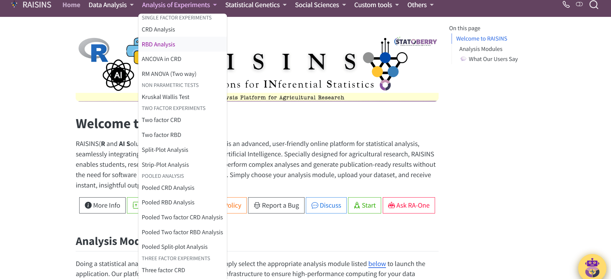
You can log in to the web application using the credentials you received after subscribing.
A working example
We’ll guide you through the entire RBD Analysis module step by step. To begin, let’s look at how the analysis can be carried out using Example 1 described in Section 1.1. For clarity, here’s a quick recap of the example: Ten mango cultivars, each representing a different treatment, are being evaluated by a horticultural scientist. Alphonso, Kesar, Dasheri, Himsagar, Chausa, Badami, Safeda, Bombay, Langra, and Totapuri are among the kinds that are included. The experiment is laid out in three blocks to account for variability among experimental units, such as differences in soil fertility or microclimatic conditions. Each block contains all ten varieties, and the assignment of treatments within each block is randomized. The dataset format required for analysis in RAISINS is illustrated in Figure 2.
Preparing data in RAISINS is simple and straightforward. Detailed instructions are provided in Section 6. Additionally, model datasets are available within the app for testing purposes,as explained in Section 7. See how dataset is arranged for analysis Figure 2.
Each response variable (yield, Obs1, Obs2, FW) can be analyzed using a Randomized Block Design (RBD) to determine whether the mango varieties differ significantly while controlling for block effects.
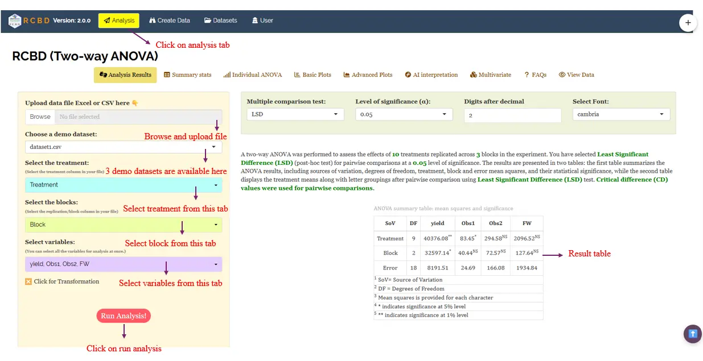
Results
RAISINS generates result table in the format given in Figure 4 and Figure 5 after the analysis.
The first result table is ANOVA summary table containing source of variation, degrees of freedom, mean squares provided for each character. The second result table is detailed tabular representation with letter grouping and other important statistics containing F stat value, p value, CD, MSE, SE(m), SE(d), CV(%), Cohen’s F. **indicates significance at 1% level and * indicates significance at 5% level.
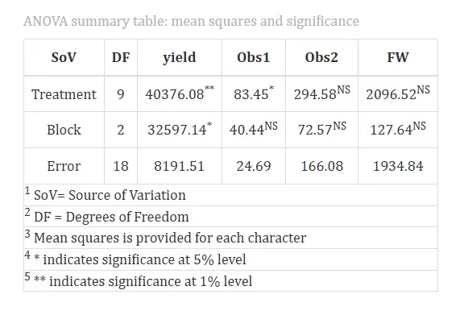
The ANOVA results show that treatment differences were highly significant for yield and significant for Obs1, indicating that cultivars varied substantially in these two traits. However, differences for Obs2 and FW were not significant, implying that these traits remained consistent across treatments. The block effect was significant only for yield, confirming that blocking successfully controlled field variability for that trait.
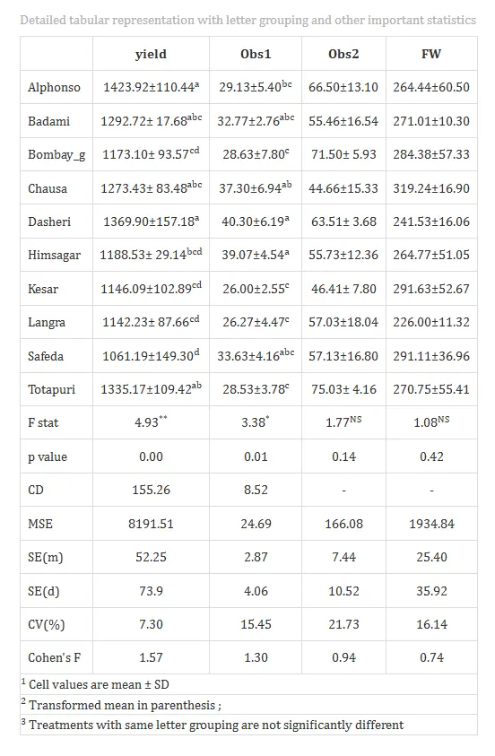
The detailed mean comparison table revealed that treatment differences were highly significant for yield and significant for Obs1, while Obs2 and fruit weight (FW) showed no significant variation among cultivars. The cultivar Alphonso recorded the highest yield, followed by Totapuri and Dasheri, whereas Safeda had the lowest yield. For Obs1, Dasheri and Himsagar performed better than the rest. Traits Obs2 and FW did not vary significantly, indicating uniformity across cultivars. The low coefficients of variation (below 22%) suggest that the experiment was conducted with good precision and reliability.
After a significant result in the RBD Analysis, a post-hoc comparison is automatically performed to identify which treatment groups differ significantly for each character under study. LSD (Least significant difference test) will be performed by default, you can change the post-hoc test to Tukey’s test and DMRT(Duncan’s Multiple Range Test) by changing from the drop down menu. The results of the post-hoc test are summarized using letter groupings. Treatments that share the same letter are considered on par, meaning they are not significantly different.
For example, in the case of the response variables Obs2 and FW, no letter groupings are shown, indicating that the Randomised Block Design did not find significant differences among the treatments. However, for yield, treatments Alphonso and Dasheri are assigned the letter ‘a’, while Badami and Chausa are assigned the letter ‘abc’,Bombay_g, Kesar and Langra are assigned the letter ’cd. This indicates that Alphonso and Dasheri form one group with similar yield, while Badami and Chausa form another group with similar yield and Bombay_g, Kesar and Langra form another significantly different group.
You can interpret the results for the other response variables in the same way: treatments with the same letter do not differ significantly in their effect on that response variable, while those with different letters do.
From the results Figure 5, it’s found that yield wise, varieties Alphonsa and Dasheri are the best, and by Obs1 wise, Dasheri and Himsagar are the best. If your objective is to select treatments based on all response variables, a multivariate analysis has to be performed. For that click on Multivaraite tab. The results as mentioned in Section 5 gives you the best treatment based on all the response variables.
Customization tabs
In RAISINS, you can easily customize your analysis by adjusting settings such as choice of multiple comparison test, level of significance, decimal places, font style, and significance level. These options help tailor the results to your specific needs, as shown in Figure 6.

Plots and graphs
RAISINS is designed for a smooth and hassle-free experience. Once you click the Run Analysis button, all relevant results and outputs appear instantly-leaving no room for confusion. We’ve ensured that every possible plot related to the Randomised Block Design is readily available. Simply click on the Plots & Graphs tab to view them. Each plot comes with a gear icon at the top-left corner, allowing you to customize its appearance. You can also download these plots in high-quality PNG format (300 dpi) for use in reports or presentations.
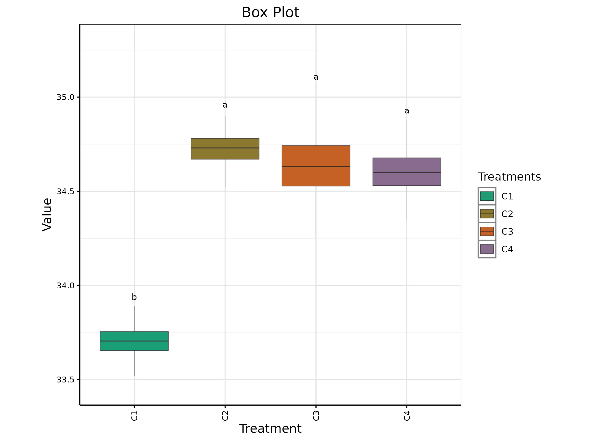
A box plot displays the distribution of data with a five-number summary: minimum, Q1, median, Q3, and maximum. It highlights central tendencies, variability, and outliers with a splash of clarity!
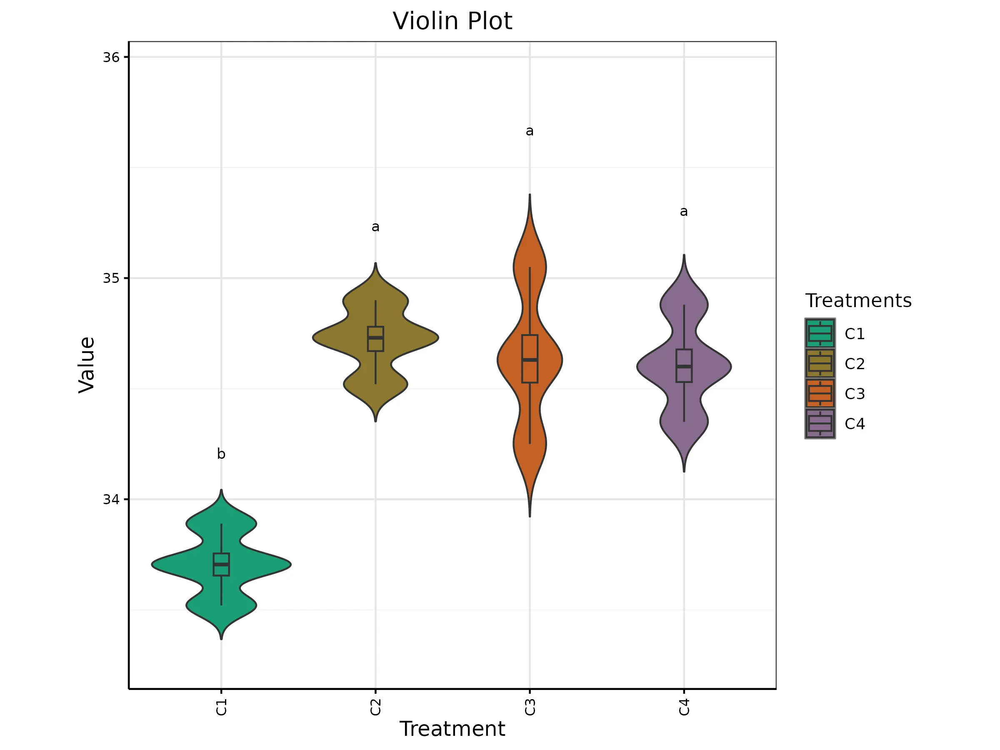
A violin plot combines the box plot and the density trace (or smoothed histogram) into a single display that reveals structure found within the data.
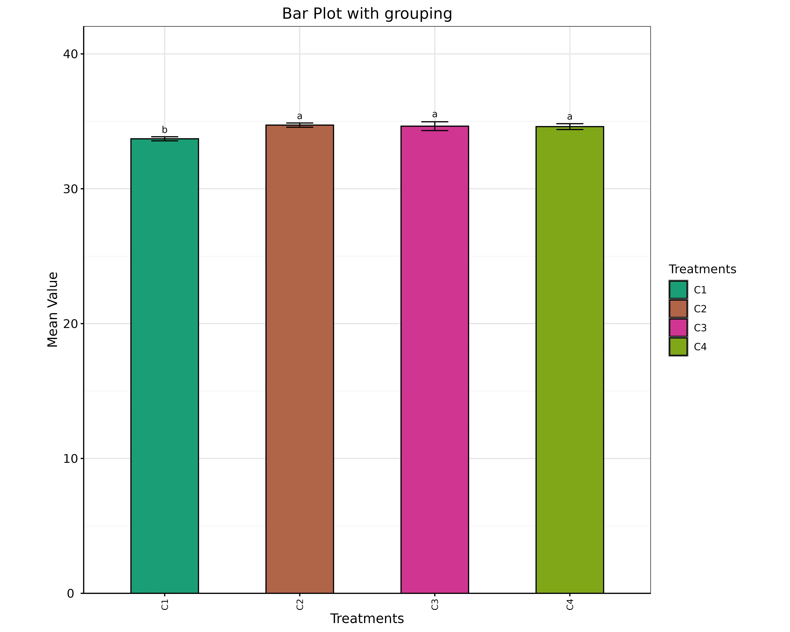
A Bar plot with error bars is a visualization that displays data using rectangular bars, where each bar’s height represents a value (e.g., mean), and error bars indicate the variability or uncertainty (e.g., standard deviation or standard error) around that value. This type of plot is commonly used in scientific and statistical contexts to summarize data and convey reliability..
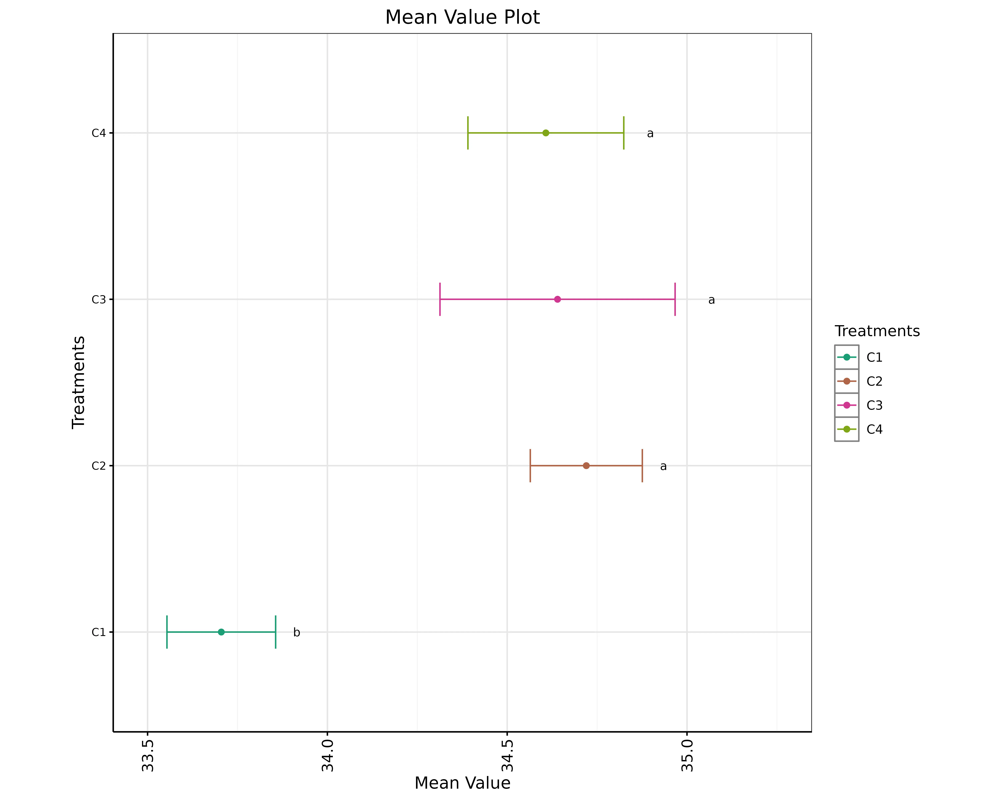
A mean value plot also known as a line plot, is a graphical representation of the average (mean) value of a dataset, often accompanied by error bars that indicates the variability around the mean. It’s used to visualize the central tendency and spread of data.
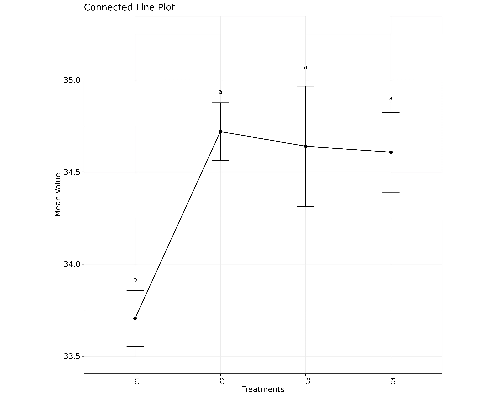
A connected line plot, is a type of chart where mean value points are represented by dots and connected across group by lines, better for comparing between groups, and to see trends and relationships between groups
Customizing plots
RAISINS provides user various customization features for the plots to enhance the visualization according to the requirement of the user.Click on the below images to get a clear idea on the customizing features.


×


Multivariate and AI
The Kruskal-Wallis test is usually used to compare one variable across several groups. Now, In our example of rating four drinks; if we have to identify best drink based on multiple variables (i.e. Appearance, Color, Texture, Taste, Flavour), navigate to Multivariate tab see Figure 7. Multivariate analysis in kruskal wallis test helps you to compare different characters simultaneously!. Remember the PCA used for multivariate selection, is an exploratory technique, not an inferential method.

A PCA will be automatically carried out based on the selected variables. PCA results and plots will appear along with automated interpretation.
The scree plot given Figure 8 illustrates the proportion of variance explained by each principal component. In our example PC1 accounts for approximately 61.08% of the variance in the dataset, while PC2 accounts for about 38.02% of the variance. Together, PC1 and PC2 explain approximately 99.1% of the total variance (termed as cumulative variance). Since PC1 explains more than 60% of the variance, a PC1-based index score is a strong consideration. Additionally, since both PCs explain more than 99% of the variance in the data, an index score based on both PCs is also appropriate. You should also take a look upon the loadings of each variable on the PCs and decide which PC-based index needs to be selected.

The loadings of each variable on PCs can be seen in Figure 9. Here Appearance, Color, Texture and Flavour has positive loading in PC1. So if you want to select best drink based on these four characters, you can use an Index based on PC1. In RAISINS this index is automatically calculated. You can see the index values calculated in Figure 10. More mathematical aspects of index construction and scalling can be read in the app itself.

Based on index score it can be seen that, V3 has the highest index followed by V4. So Experimenter can select the drink V3 and V4. Also in some cases when the loadings of prefered variables are negative, a lower index value is preferred. Here to refine your selection, use the ‘Select cutoff for Scaled Index Score’ feature, where you can choose the cutoff percentage to select treatments above or below a certain threshold. The default cutoff is set at 75%. By toggling the up-arrow and down-arrow buttons below the cutoff selection, you can select the top or bottom percentage of treatments as per your preference. Selected treatments are highlighted in yellow in the table below, providing a clear visual cue.

The index plot shown in Figure 11, used in the context of Principal Component Analysis (PCA), visually displays the positions of treatments (or groups) based on their index scores—similar to a radar chart. In Figure 11, V3 and V4 emerge as the selected drinks based on the four characters under study: appearance, color, texture, and flavour.

Additionally, the biplot in Figure 12 clearly shows that V4 and V3 are positioned closer to three key characters—Appearance, Texture, and Flavour—indicating that these treatments scored highly for these attributes. If taste alone is the criterion, V2 emerges as the best candidate, as evident from Figure 4. On the other hand, V1 appears to be the least favourable option, having received low scores across all characters.

Combining all this information, the experimenter can arrive at an overall conclusion that is statistically sound and contextually relevant to their study.
RAISINS is equipped with an AI-powered RAISINS Assistant designed to assist users in comprehending the outcomes of statistical tests and data analysis. This functionality provides clear and concise summaries of results, identifies statistically significant differences between groups, and offers informed suggestions for potential next steps or interpretations. The AI interpretation given below Figure 13

RAISINS enables users to draw meaningful conclusions without requiring advanced expertise in statistics.
Preparing your data
What truly matters is the quality of your data! As the saying goes, “garbage in, garbage out” — and this holds true for any software. To prepare your dataset for analysis in RAISINS, you have two options:
- Create your dataset in MS Excel
- Build your dataset directly within the RAISINS app
Preparing data in MS Excel
Open a new blank sheet in MS Excel with only one sheet included, and avoid adding any unnecessary content. The dataset should follow a column-based format, where the first column represents the treatment or group to be compared—you can name this column appropriately, such as “Group” or “Treatment.” All characters under study (e.g., Appearance, Texture, Taste) should be arranged in separate columns, and each group should be repeated according to the number of replications. The file can be saved in CSV, XLS, or XLSX format, but CSV is recommended as it is lighter and enables faster loading. Ensure that there are no unwanted spaces in column names or group names. For reference, see the structure shown in Figure 14. As illustrated in ?@fig-raisinkwt, groups must appear repeatedly based on replications, and the data can also be arranged as shown in Figure 15.


Dataset Creation Rules
- Column Naming Convention
- No spaces allowed in column names.
- Use underscores (
_) or full stops (.) for separation. - Avoid symbols and special characters like %,# etc
- No spaces allowed in column names.
- Data Arrangement
- Start data arrangement towards the upper-left corner.
- Ensure the row above the data is not blank.
- Start data arrangement towards the upper-left corner.
- Cell Management
- Avoid typing or deleting in cells without data.
- If needed, select affected cells, right-click, and select Clear Contents.
- Avoid typing or deleting in cells without data.
- Column Relevance
- Name all columns meaningfully.
- Exclude unnecessary columns not required for analysis.
- Name all columns meaningfully.
How to Save as CSV in MS Excel
Open Your Workbook
- Ensure your data is arranged properly with only one sheet.
Click ‘File’ Menu
- Go to the top-left corner and click on File.
Choose ‘Save As’ or ‘Save a Copy’
- Select the location where you want to save your file.
Set File Type to CSV
- In the ‘Save as type’ dropdown menu, choose CSV (Comma delimited) (*.csv).
Name Your File
- Enter a relevant file name without spaces (use underscores if needed).
Click ‘Save’
- Click Save to export the file.
💡 Tip: Before saving, double-check that your data is on the first sheet and follows the required format (e.g., no empty rows above the data, meaningful column names).
Creating dataset in RAISINS
If you’re unsure about the correct format for creating a dataset, don’t worry—Raisins offers an option to create data directly within the app using the prescribed template. Here’s how:
➡️Navigate to the Create Data Tab
➡️ Select the number of Treatments
➡️ Select number of Replications
➡️Click onCreate button**
Model layout will appear as shown in Figure 16. Now you may enter the observations manually into the CSV file once downloaded, or paste the observations straight into the file provided. Once you have entered the observations in the layout, download the csv file and upload in Analysis tab!

Model Datasets
To test the app or better understand the data arrangement, we provide model datasets within the app. You can download them from the Datasets tab.

FAQ’s
The app includes a dedicated FAQ tab to help clarify common doubts and guide users through various features. This section provides detailed answers to frequently asked questions, offering additional information and helpful tips to ensure a smooth user experience. If you’re ever unsure about how something works, the FAQ tab is a great place to start.

User
You can find all your account details—including usage percentage, plan validity, subscription type, and billing information—under the User tab. This section also allows you to download your GST invoice. We adhere to a strict data policy: each time you log in, a temporary instance of the app is created exclusively for you, which is automatically terminated when you log out. No uploaded data or generated results are stored, ensuring complete privacy and data security.